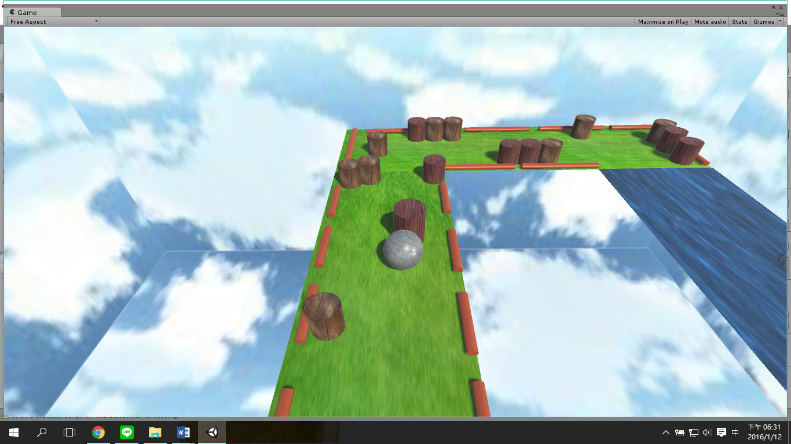
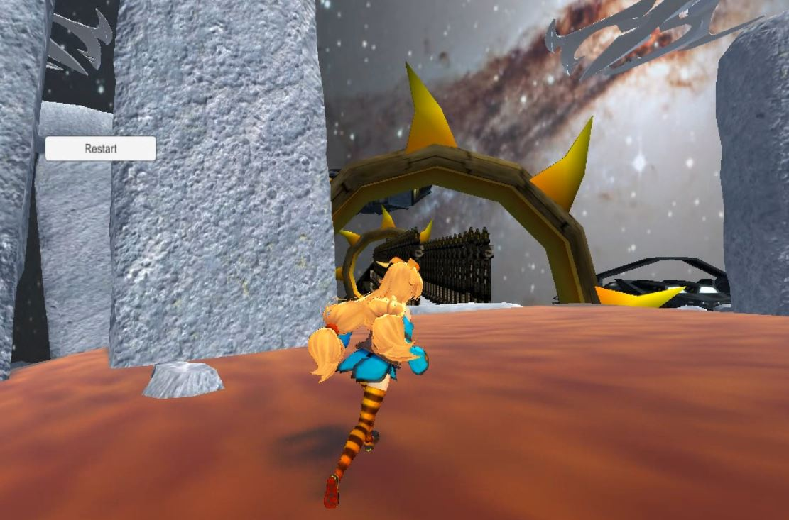
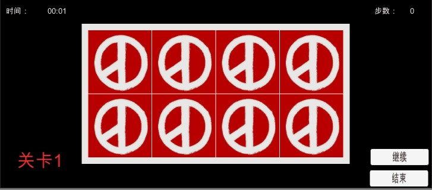
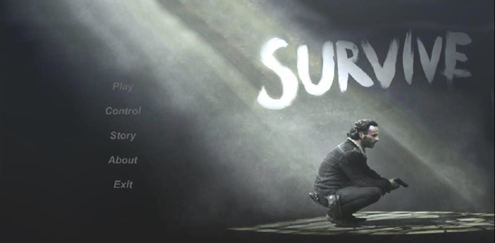
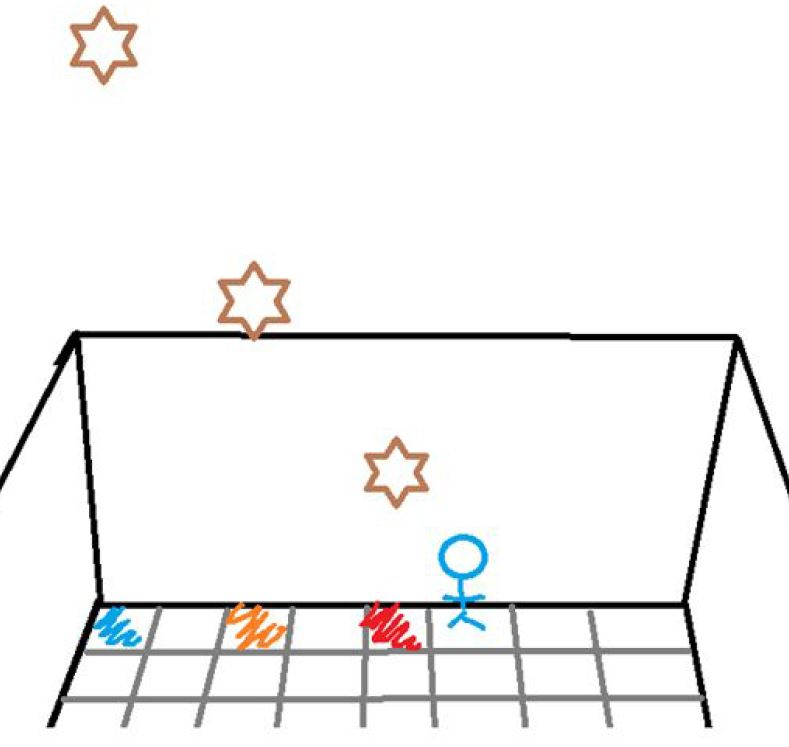
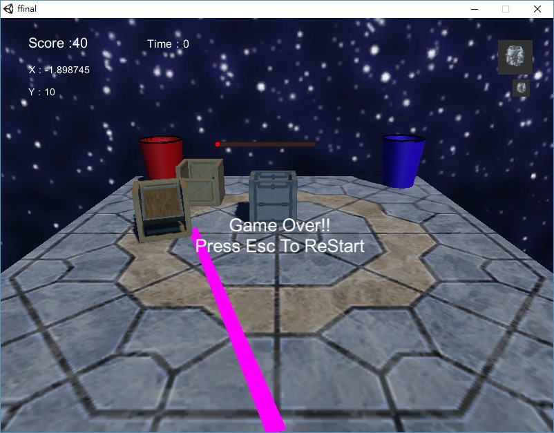
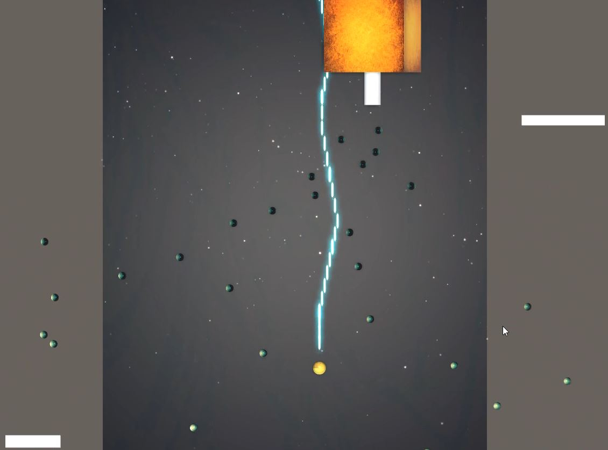
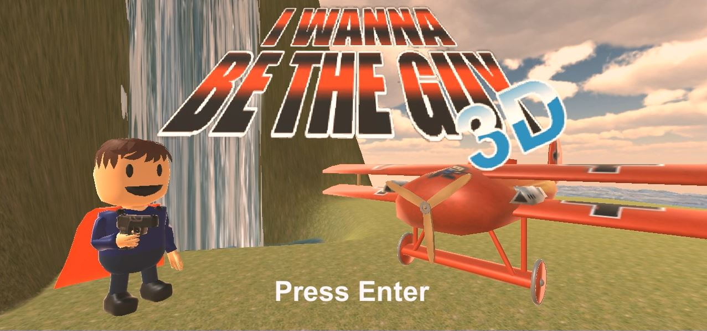
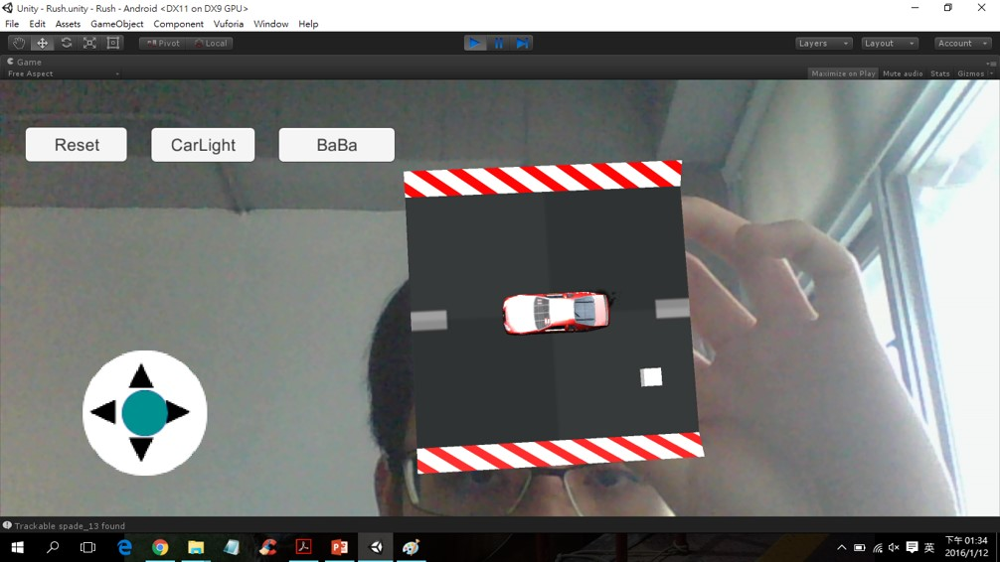
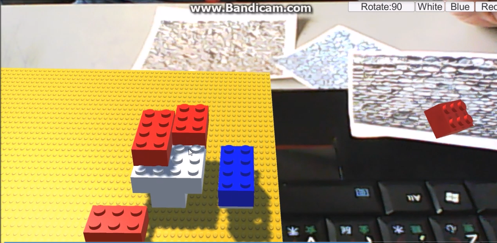

Finial Project
-
1. Save Us! - With Leap Motion
學習及操作各種急救內容，讓你了解和熟悉急救，在現實更敢於出手救人。
Video
-

2. 競速的球
遊戲的概念就是類似於競速遊戲，在滾動的路上會有眾多的障礙物，或是討厭的邊界陷阱，使得玩家會因此而提高到達終點線的時間。
Video
-
3. 小陳衝衝樂
小陳為了拿回自己設計的武器設計圖，必須突破重重關卡才能取回自己的設計圖。
Video
-

4. 翻牌遊戲
當同時翻到兩張相同的卡片時，兩張卡片將會消除，直到所有的卡片消失。
Video
-

5. 射殺殭屍
與市面上的FPS(第一人稱射擊)遊戲相同，移動遊戲的角色在地圖上到處移動，為了避免被殭屍抓到，玩家可利用槍射殺殭屍，一旦被殭屍抓到遊戲即結束，在一定的時間內，射殺的殭屍越多分數越高，可以與其他玩家比較誰才是真正的殺殭屍高手！
Video
-
6. 聖杯戰爭
聖杯戰爭是魔術師和英靈們拼上性命互相廝殺的大混戰，它所表現的是以生存競 爭為本質的戰爭。御主（Master）必須與t種職階的從者（Servant）立下契約，在 戰爭中打敗其他陣營的參戰者，以證明自己是有資格擁有聖杯的人，方可得到聖杯的 使用權。
Video
-

7. 癌額，又是隕石
當隕石落下的時候，在隕石最高的時候底下的地板會顯示藍色，之後到某個高度後會變成橙色，在接近人物高度的時候就會轉成紅色，如果人物被隕石打到就會減少一命
Video
-
8. 《 RUN！ Unity醬 ～減肥大作戰～ 》
Unity醬想透過跑步減肥，玩家必須協助她避開路上種種誘惑
Video
-

9. 小良丟垃圾
第一人稱，投擲遊戲，垃圾分類，資源回收
Video
-

10. Poi/n/t/s
玩家扮演一個小點，隨著故事進行，慢慢發掘出那世界中存在的變異，那個世界，並非一成不變，從黑到白，看似逐漸明朗的世界。點開始進化成線面，成為多邊，然而，多邊形卻羞於自己為點所演化，對於非面盡其所能的抹滅，點遭逢獵殺，點徬徨無措，在砲火中游離、在地雷中迴避
Video
-

11. I wanna be the guy 3D
這款遊戲是由原作I wanna be the guy改編而成，原作為2D橫向卷軸遊戲，而它最大的特色在於遊戲內沒有任何符合邏輯的陷阱，要破關的玩家必須閃過許多意想不到的陷阱，躲過許多整人的機關去並且擊敗各式各樣的BOSS，另外I wanna be the guy並沒有生命值，所以被陷阱擊中一次就會直接死亡，必須從上一個存檔點開始重新跳戰。而我們設計的遊戲是將原作轉為3D的改編遊戲，繼承了所有遊戲的重要元素，並運用3D的特色提升遊戲的樂趣。
Video
-

12. Rush
使用撲克牌鋪路，使用者能設計自己的軌道
使用AR技術，讓場景與現實結合，而不是只有在虛擬世界
日夜系統：場景的光暗會隨時間漸亮或漸暗，必要時須使用車燈照明
喇叭嘲諷功能：獨特的Ba Ba聲，可以拿來嘲諷自己。
Video
-

13. 積木故事書
讓使用者能與故事有互動，因此採用堆積木的方式。
Video